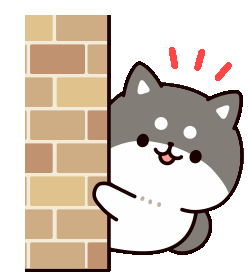

Find the Invisible Cat!!
How to Play?
Difficulty:
Medium

Meow! You found me in
clicks!!!
Play again
Cancel
Oops! You failed..
Play again
Cancel
Somewhere in this page is a hidden cat. Keep clicking on various locations of the page until you find the cat.
Follow the meows to find out how far you are from the cat. The louder, the closer!